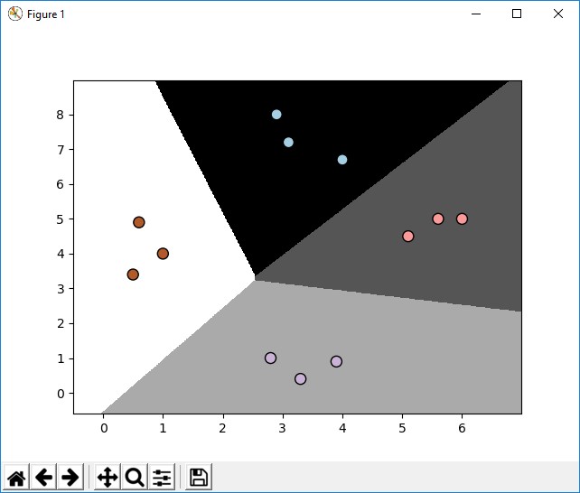

Classification and Regression
Using Spervisised Learning
Trong chương này , chúng ta sẽ học về phân loại và quy hợp của dữ liệu sử dụng kỹ thuật học giám sát.
Học hết chương này bạn sẽ biết về các chủ đề sau:
Giám sát và không giám sát học tập
Machine Learning (ML) máy học thường được chia các làm nhóm :
Một trong những cách thông dụng để truyền trí thông minh nhân tạo vào một cái máy là thông qua việc cho máy tự học (machine learning). Thế giới của máy tính tự học được phân chia rộng rãi cho học giám sát và không giám sát. Cũng có vài cách chia khác như bán giám sát và củng cố…, nhưng chúng ta sẽ thảo luận về nó sau.
Học Có Giám Sát (Supervised learning) Là đề cập đến quá trình xây dựng một mô hình máy tính tự học dựa trên những dữ liệu đã train được dán nhãn sẵn.
Đây là thuật toán dự đoán đầu ra (output) của một dữ liệu mới (new input) dựa trên các cặp (input,output) đã biết trước. Cặp dữ liệu này còn được gọi là [dữ liệu,nhãn] (data, label) [X,y]
Ta có một mảng (array) biến đầu vào X=[x1,x2,..xn] và một mảng nhãn tương ứng Y=[y1,y2,…,yn] các cặp dữ liệu biết trước được gọi là dữ liệu huấn luyện (training data) . Từ dữ liệu này chúng ta cần tạo ra một hàm số để ánh xạ (map) mỗi phần tử (item) từ array X sang một phần tử (item) tương ứng của array Y. . Mục đích của việc này làm giá trị của hàm số gần đúng nhất để mỗi khi có một dữ liệu mới chúng ta có thể tính được nhãn (label) tương ứng của nó
ví dụ : Trong nhận dạng khuân mặt. ta có một mảng dữ liệu gồm nhiều ảnh của nhiều người khác nhau mỗi người lại có vài tấm ảnh chụp ở những vị trí khác nhau. Chúng ta đưa những bức ảnh này vào trong một thuật toán và chỉ cho nó biết mỗi bức ảnh tương ứng với tên là gì gì. Sau đó thuật toán sẽ tạo ra một mô hình (model) tức là một hàm số có đầu vào (x) là một bức ảnh và đầu ra (y) là một cái tên. Khi ta đưa vào một bức ảnh mà mô hình (model) đó chưa thấy bao giờ nó sẽ dự đoán (predict) bức ảnh đó là ai.
ví dụ khác: Chúng ta muốn xây dựng một hệ thống dự đoán thu nhập của một người, dựa trên những dữ liệu khác nhau như độ tuổi, trình độ học vấn, vị trí …vv..v. Để làm điều đó chúng ta cần tạo ra một cơ sở dữ liệu của người đó thật chi tiết và dán nhãn cho nó. Làm được điều này chúng ta đã nói với thuật toán của chúng ta cần tham số gì để hiểu thu nhập tương ứng với cái gì. Dựa vào việc lập biểu đồ ánh xạ (mapping) tương ứng, thuật toán sẽ học làm cách nào để tính toán thu nhập của một người sử dụng những tham số đã được cho trước.
Học không giám sát( unsupervised learning) là thuật toán đề cập đến quá trình xây dựng máy tự học (ML) mà không dựa trên những dữ liệu được dán nhãn, chúng ta sẽ không biết được đầu ra(output) hay nhãn(label) tương ứng cho dữ liệu đầu vào(input). Trong một vài ý nghĩa thì nó là những thứ ngược lại với những thứ ta vừa nói ở trên. Vì không có những nhãn tương ứng đã được biết trước, bạn cần phân tích những dữ liệu đầu vào. Ví dụ, Chúng ta cần xây dựng một hệ thống mà trong đó chúng ta phải tách một tập hợp các dữ liệu thành các nhóm (Clustering datas) khác nhau. Cái khó ở đây là chúng ta không biết chính xác các điều kiện để tách dữ liệu. Vì thế một thuật toán học tập không giám sát cần tách dự liệu đã cho thành một số của các nhóm theo cách tốt nhất có thể.
Phân nhóm dữ liệu (Clustering data): Chúng ta phải phân nhóm toàn bộ dữ liệu đầu vào (input) thành các nhóm dựa trên sự liên quan giữa các dữ liệu đã có trong mỗi nhóm. Vd: Phân nhóm khách hàng dựa vào hành vi mua hàng
Tổng hợp dữ liệu ( Association Data): Là bài toán khi chúng ta cần tìm ra một quy luật dựa trên dữ liệu đầu vào , hoặc dữ liệu cho trước (input). Vd: Những khách hàng nam mua quần áo thường có xu hướng mua them đồng hồ, bóp hay thắt lưng. Những khách hàng xem phim Avenger thường thích các phim hành động. Dựa vào đó chúng ta tạo ra một hệ thống gợi ý khách hàng ( Recommend System).
Túm lại học không giám sát là khi chúng ta chỉ có dữ liệu đầu vào (input) x mà không biến nhãn y tương ứng cho nó.
Phân loại là gì?
Trong chương này chúng ta sẽ thạo luận về kỹ thuật phân loại không giám sát. Quá trình phân loại là một kỹ thuật trong đó chúng ta phân loại dữ liệu thành các lớp nhất định. Trong quá trình phân loại, Chúng ta xắp xếp dữ liệu vào trong một số cố định của một thể loại xác định để nó có thể sử dụng một cách hiệu quả nhất.
Trong lĩnh vực máy học (machine learning) ,phân loại (classification) giải quyết vấn đề nhận diện và phân loại danh mục cho một dữ liệu mới. Chúng ta xây dựng một mẫu phân loại ( classification model) dựa trên việc huấn luyện tập dữ liệu chứa dữ liệu và những vấn đề nguyên bản được dán nhãn. Ví dụ, chúng ta muốn kiểm tra không biết hình ảnh được nhập có chứa mặt của người hay không . Chúng ta phải xây dựng trạm dữ liệu (dataset) chứa 2 lớp nguyên bản (classes corresponding) chứa: Face và no-face. Sau đó chúng ta phải huấn luyện cho mẫu (model) dựa trên nhũng ví dụ mà chúng ta có, những nguyên mẫu (models) này sau đó được sử dụng để suy luận.
Một hệ thống phân loại tốt là nó có thể dễ dàng tìm và trả lại dữ liệu. Nó được sử dụng rộng rãi trong việc nhận diện khuôn mặt, kiểm tra spam, những máy móc được khuyên dùng vv..vv. Thuật toán phân loại dữ liệu sẽ đưa ra các tiêu chí phù hợp để phân tích dữ liệu được đưa vào và số lượng lớp.
Chúng ta cần chuẩn bị một lượng lớn và đầy đủ các ví dụ để có thể dự đoán. Nếu không đủ các ví dụ thì thuật toán sẽ rất khó trong việc xắp xếp dữ liệu. điều này cũng giống như nó làm việc trên những cơ sở dữ liệu không xác định .
Tiền xử lý dữ liệu( Preprocessing data)
Chúng ta xử lý rất nhiều dữ liệu thô trong thế giới thực. Những thuật toán của máy tự học cần có được dữ liệu đã được định dạng cơ bản trước khi bắt đâu quá trình luyện tập. Để chuẩn bị dữ liệu nhập cho máy tính huấn luyện dữ liệu chúng ta phải xử lý dữ liệu thô và chuyển dổi nó vào định dạng chính xác chúng ta cần. Hãy xem làm thế nào với python.
Tạo một file Python mới và import các package sau:
import numpy as np
from sklearn import preprocessing
define sampe data :
input_data = np.array([
[5.1, -2.9, 3.3],
[-1.2, 7.8, -6.1],
[3.9, 0.4, 2.1],
[7.3, -9.9, -4.5]])
Chúng ta cần nói về vài kỹ thuật xử lý dữ liệu thô. Hãy bắt đầu với binaraization:
Binarization
Cách xử lý này được sử dụng khi chúng ta muốn biến đổi những giá trị số thành giá trị đúng và sai (1,0). Hãy sử dụng hàm có sẵn để nhị phân( binarize ) dữ liệu được nhập vào,ở đây giá trị ngưỡng ( threshold value) bằng 2.1 .
giải thích 1 chút về giá trị ngưỡng : Ví dụ thang điểm đánh giá học sinh là từ 1 đến 10. Trong một tập hợp gồm 40 học sinh của 1 lớp, người ta muốn phân lọai ra hai miền, miền thứ nhất bao gồm các học sinh đạt yêu cầu và miền thứ hai gồm các học sinh không đạt. Trong tình huống đó người ta dùng giá trị 5 (điểm) như là một ngưỡng (threshold) để phân loại học sinh. Giá trị ngưỡng thường được xác định dựa vào những điểm đặc biệt (ví dụ ở trung bình), dựa vào kinh nghiệm khảo sát.
Thêm đoạn code sau vào file Python đã tạo:
#Binarize data
data_binarized =
preprocessing.Binarizer(threshold=2.1).transform(input_data)
print("\nBinarized data:\n", data_binarized)
Nếu chạy đoạn code bên trên bạn sẽ thấy kết quả được đưa ra như sau:
Binarized data:
[[ 1. 0. 1.]
[ 0. 1. 0.]
[ 1. 0. 0.]
[ 1. 0. 0.]]
Giống như chúng ta đã thấy , tất cả các giá trị lớn hơn 2.1 sẽ trở thành 1 còn lại sẽ thành 0.
Mean Removal ( Chuẩn hóa dữ liệu - standardization)
Loại bỏ giá trị trung bình (Removing the mean) là phương pháp xử lý sơ cấp thường được sử dụng trong máy tự học. Nó thường hữu dụng trong việc bỏ giá trị trung bình khỏi vector của chúng ta, sao cho mỗi toán tử ở giữa số 0. Chúng ta làm điều này để loại bỏ bias từ vector chính.
Code:
# Print mean and standard deviation
print("\nBEFORE:")
print("Mean =", input_data.mean(axis=0))
print("Std deviation =", input_data.std(axis=0))
Dòng đầu tiên hiển thị độ lệch trung bình và dòng 2 là lệch chuẩn của dữ liệu đầu vào.
Loại bỏ giá trị trung bình bằng đoạn code sau :
# Remove mean
data_scaled = preprocessing.scale(input_data)
print("\nAFTER:")
print("Mean =", data_scaled.mean(axis=0)) # tính giá trị trung bình mỗi cột
print("Std deviation =", data_scaled.std(axis=0)) # tính giá trị phương sai mỗi cột
Nếu chúng ta chạy đoạn code trên thì chúng ta sẽ có kết quả như sau ở Terminal:
BEFORE:
Mean = [ 3.775 -1.15 -1.3 ]
Std deviation = [ 3.12039661 6.36651396 4.0620192 ]
AFTER:
Mean = [ 1.11022302e-16 0.00000000e+00 2.77555756e-17]
Std deviation = [ 1. 1. 1.]
Từ những giá trị ta hiển thị ra ta thấy giá trị trung bình rát gần với 0 và độ lệch chuẩn là 1.
Mean và std devation lần lượt là vector kỳ vọng và phương sai của toàn bộ dữ liệu training.
Scaling (tỉ lệ dữ liệu)
Trong vector chính của chúng ta, giá trị của mỗi thuộc tính có thể chứa nhiều giá trị ngẫu nhiên khác nhau. Vì thế điều này sẽ làm ảnh hưởng tới độ chính xác của các thuật toán. Chính vị vậy chúng ta phải tiến hành điều chỉnh dữ liệu để các thuộc tính cùng có chung một tỷ lệ (data scaling). Và thường các thuộc tính có giá trị trong khoảng 0-1.
Thêm đoạn code sau vào file Python bên trên:
# Min max scaling
data_scaler_minmax = preprocessing.MinMaxScaler(feature_range=(0, 1))
data_scaled_minmax = data_scaler_minmax.fit_transform(input_data)
print("\nMin max scaled data:\n", data_scaled_minmax)
Nếu đoạn code trên được chạy bạn sẽ thấy đoạn sau được in ra trong Terminal:
Min max scaled data:
[[ 0.74117647 0.39548023 1. ]
[ 0. 1. 0. ]
[ 0.6 0.5819209 0.87234043]
[ 1. 0. 0.17021277]]
Mỗi hàng được chia tỉ lệ sao cho giá trị tối đa là 1 và tất các các giá trị khác đều có liên quan đến giá trị này.
Normalization (Bình thường(đơn giản) hóa dữ liệu)
Bình thường hóa dữ liệu là điều chỉnh tỉ lệ dữ liệu sao cho mỗi thể hiện đều cho độ dài là 1. Trong Máy Học, chúng ta sử dụng rất nhiều kiểu mẫu đơn giản hóa. Một vài hình thức phổ biến nhất của đơn giản hóa là đặt mục tiêu để điều chỉnh dữ liệu thành tổng 1. L1 normalization, trong đó đề cập đếnđộ lệch tuyệt đối nhỏ nhất (Least apsolute Deviations) nó hoạt động theo cách tổng các giá trị tuyệt đối trên mỗi hàng là 1. L2 Normalization , là cách làm bình phương tối thiểu, được làm bằng cách làm cho tổng bình phương thành 1.
Nói chung, L1 Normalization là kỹ thuật được xem làm mạnh mẽ hơn L2 Normalization. L1 normalization được xem là mạnh mẽ hơn vì nó ít có ngoại lệ trong dữ liệu. Rất nhiều lần, dữ liệu thường có xu thế chứa những ngoại lệ và chúng ta không biết làm gì với nó. Chúng ta muốn sử dụng những kỹ thuật an toàn và có ảnh hưởng tốt bỏ qua những ngoại lệ đó trong tính toán. Nếu chúng ta phải giải quyết vấn đề mà phần ngoại lệ là quan trọng, thì khi đó L2 Normalization trở thành lựa chọn tốt hơn.
Thêm dòng sau vào file Python có sẵn :
# Normalize data
data_normalized_l1 = preprocessing.normalize(input_data, norm='l1')
data_normalized_l2 = preprocessing.normalize(input_data, norm='l2')
print("\nL1 normalized data:\n", data_normalized_l1)
print("\nL2 normalized data:\n", data_normalized_l2)
Terminal output:
L1 normalized data:
[[ 0.45132743 -0.25663717 0.2920354 ]
[-0.0794702 0.51655629 -0.40397351]
[ 0.609375 0.0625 0.328125 ]
[ 0.33640553 -0.4562212 -0.20737327]]
L2 normalized data:
[[ 0.75765788 -0.43082507 0.49024922]
[-0.12030718 0.78199664 -0.61156148]
[ 0.87690281 0.08993875 0.47217844]
[ 0.55734935 -0.75585734 -0.34357152]]
Label encoding ( Mã hóa nhãn )
Khi thực hiện phân loại chúng ta thường xử lý rất nhiều nhãn dán. Những nhãn này có thể trong hình thức của từ, số hoặc vài thứ khác. Các functions máy học trong sklearn phân tích chúng dưới dạng số. Vậy nếu chúng ta đã có những số, sau đó chúng ta có thể dùng chúng một cách trực tiếp để bắt đầu training, Nhưng nó không phải cách dùng trong trường hợp này.
Trong thế giới thực, Nhãn dán được biết dưới dạng chữ, bởi chữ là những thứ con người có thể đọc. Chúng ta ghi nhãn những dữ liệu được training bằng chữ để mapping có thể theo dõi được. Để chuyển đổi các nhãn dưới dạng chữ thành số. chúng ta sử dụng một dạng mã hóa Label (label encoder). Label encoding là quá trình biến đổi labels từ dạng chữ sang dạng số. Nó là cách kích hoạt thuật toán để mổ xẻ dữ liệu của chúng ta:
Tạo một file Python mới và import numpy,sklearn packages:
Import numpy as np
Form sklearn import preprocessing
Định danh một vài labels:
# Sample input_labels
input_labels=[‘red’, ‘black’, ‘red’, ‘green’, ‘black’, ‘yellow’, ‘white’]
Tạo một mã hóa labels object và luyện tập cho nó:
# create label encoder and fit the labels
encoder = preprocessing.LabelEncoder()
encoder.fit(input_labels)
In những ánh xạ giữa từ và số:
# print the mapping
print(“\nLabel mapping:”)
for i, item in enumerate(encoder.classes_):
print(item,’-’,i)
Ta hãy xóa một vài nhãn ngẫu nhiên để xem cách mã hóa hoạt động thế nào:
# encode a set ò labels using encoder
test_labels = [‘green’, ‘red’, ‘black’]
encoded_values=encoder.transform(test_labels)
print(“\n Labels=”,test_labels)
print(“Encoded values=”,list(encoded_values))
Bây giờ thì giải mã một vài số ngẫu nhiêu:
# Decode a set of values using the encoder
encoded_values=[3,0,4,1]
decoded_list= encoder.inverse_transform(encoded_values)
print(“\nEncoded values=”,encoded_values)
print(“\nDecoded labels=”,list(decoded_list))
Rồi giờ thì chạy đoạn code trên với pycham. Kết quả sẽ giống thế này:
PS D:\AI Python> & C:/WPy64-3720/python-3.7.2.amd64/python.exe "d:/AI Python/Test.py"
Label mapping:
black --> 0
green --> 1
red --> 2
white --> 3
yellow --> 4
Labels = ['green', 'red', 'black']
Encoded values = [1, 2, 0]
Encoded values = [3, 0, 4, 1]
Decoded labels = ['white', 'black', 'yellow', 'green']
Phân loại hồi quy lý luận( Logistic Regression classifier)
Lý luận hồi quy là kỹ thuật sử dụng để giải thích mối quan hệ giữa biến đầu vào và biến đầu ra. Các biến đầu vào được coi là độc lập và các biến đầu ra được coi là biến phụ thuộc. Biến phụ thuộc chỉ có thể lấy một giá trị cố định của các giá trị đầu ra. Các giá trị này tương ứng với các lớp của phần phân loại.
Nhiệu vụ của chúng ta là định danh ( nhận định) mối quan hệ giữa các biến độc lập và phụ thuộc bằng cách ước tính xác xuất sửa dụng một hàm logistic. Hàm logistic này là một đường cong sigmoid(sigmoid curve) nó dùng để xây dựng một hàm cùng với những tham số khác nhau. Nó rất giống với phân tích Linear model,cách mà chúng ta cố gắng đặt một dòng vào một đống điểm để giảm thiểu lỗi. Thay vì sử dụng hồi quy tuyến tính ( linear regression), chúng ta sử dụng hồi quy lý luận( logistic regression). Hồi quy lý luận về cơ bản không phải là một kỹ thuật phân loại ( not a classification technique), nhưng chúng ta sử dụng nó theo cách này để tạo điều kiện cho phân loại. Nó được sử dụng rất thường xuyên trong máy học bởi nó rất cơ bản và đơn giản. Hãy xem làm thế nào để xây dựng một hàm phân loại xử dụng Hồi quy ly luận. Hãy chắc chắn bạn có Tkinter package được cài trong hệ thống trước khi chúng ta bắt đầu. Nếu bạn không có bạn có thể tìm nó ở : https://docs.python.org/2/library/tkinter.html.
Tạo một file Python mới và import các package . Chúng ta sẽ import một hàm từ file utilities.py. Chúng ta sẽ xem sét hàm ở trong đó sau, và bay giờ thì import nó vào nào:
import numpy as np
from sklearn import linear_model
form utilities import visualize_classifier
Define một vài dữ liệu đầu vào với vectors 2 chiều và dán nhãn tương ứng:
# Define sample input data
X = np.array([[3.1, 7.2], [4, 6.7], [2.9, 8], [5.1, 4.5], [6, 5], [5.6, 5],
[3.3, 0.4], [3.9, 0.9], [2.8, 1], [0.5, 3.4], [1, 4], [0.6, 4.9]])
y = np.array([0, 0, 0, 1, 1, 1, 2, 2, 2, 3, 3, 3])
Chúng ta sẽ train bộ phân loại bằng cách sử dụng nhãn dữ liệu. Giờ thì tạo một Lý luận hồi quy object:
# create the logistic regression classifier
classifier = linear_model.LogisticRegression(solver=’liblinear’,C=1)
Huấn luyện bộ phân loại sử dụng dữ liệu chúng ta đã định nghĩa ban đầu:
# Train the classifier
classifier.fit(X,y)
Nhắc lại sự thực hiện phân loại bằng cách nhìn vào ranh giới của các lớp:
# Visualize the performance of the classifier
visualize_classifier(classifier, X, y)
Chúng ta cần định nghĩa hàm này trước khi chúng ta dùng nó. Chúng ta sẽ sử dụng nhiều lần trong chapter này vị vậy tốt nhất là chúng ta định nghĩa nó trong một file và import hàm đó vào. Hàm này được đưa vào trong file utilities.py .
Tạo file Python đặt tên là utilities.py.
Import numpy as np
Import matplotlib.pyplot as plt
def visualize_classifier(classifier,X,y):
# ĐỊnh nghĩa gí trị lớn nhất và nhỏ nhất cho X và y
# nó sẽ được sử dụng trong một lưới
min_x,max_x=X[:,0].min() -1.0,X[:,0].max()+1.0
min_y,max_y=X[:,1].min()-1.0,X[:,1].max()+1.0
Chúng ta đã xác định giá trị nhỏ nhất và lớn nhất của các hướng X và Y sẽ được sử dụng trong lưới của chúng ta . Lưới này về cơ bản là một tập hợp các giá trị được sử dụng để dánh giá các hàm, để chúng ta có thể hình dung được ranh giới của các lớp . Xác định kích thước bước cho lưới và tạo cho nó các giá trị tối thiểu và tối đa:
# Xác định kích thước bước cho lưới(
mesh_stop_size=0.01
# Define lưới cho các giá trị X và Y
x_vals,y_vals=np.meshgrid(np.arange(min_x,max_x,mesh_step_size),np.arange(min_y,max_y,mesh_step_size))
Chạy bộ phân loại trên tất cả các điểm của lưới
# Chạy bộ phân loại trên lưới
output=classifier.predict(np.c_[x_vals,ravel(),y_vals.ravel()])
# Xếp loại array đầu ra
output= ouput.reshape(x_vals.shape)
Tạo một figure( giao diện đồ họa trong matplot), chọn một màu và đổ lên trên các điểm:
# tạo một plot figure
plt.figure()
#Chọn màu cho plot
plt.pcolormesh(x_vals,y_vals,output,cmap=plt.cm.gray)
# Đổ màu các điểm huấn luyện trên plot
plt.scatter(X[:,0],X[:,1],c=y,s=75,edgecolors=’black’,linewidth=1,cmap=plt.cm.Paired)
# Chỉ ra các điểm viền bao quanh của plots sử dụng giá trị nhỏ nhất và lớn nhất, them tick marks và hiển thị figure
# Điểm viền của plot
plt.xlim(x_vals.min(),x_vals.max())
plt.ylim(y_vals.min(),y_vals.max())
# Chỉ địch đánh dấu trên trục X và Y
plt.xticks((np.arange(int(X[:,0].min()-1),int(X[:,0].max()+1),1.0)))
plt.yticks((np.arange(int(X[:,1].min()-1),int(X[:,1].max()+1,1.0)))
plt.show();
Ok chạy xong rồi thì ta sẽ có hình như sau
Ok giờ thay đổi giá trị C thành 100 trong object classifier
classifier = linear_model.LogisticRegression(solver=’liblinear’,C=100)
Lý do giá trị C áp dụng loại bỏ phân loại sai, nên thuật toán sẽ phân loại tốt hơn để training dữ liệu. Bạn nên cẩn thận với tham số này, bởi vì nếu bạn tang quá nhiều nó sẽ không phù hợp với training dât, và nó sẽ không phù hợp.
Sau khi thay đổi tham số C thành 100 chạy thử lại file logistic_regression.py ta sẽ có kết quả như sau:

Nếu so với figure phía trên bạn sẽ thấy đường viền xung quanh có vẻ nhìn tốt hơn.
Naïve Bayes classifier
Naïve Bayes là một thuật toán để xây dựng phân loại sử dụng định lý Bayes. Định lý Bayes là một kết quả của lý thuyết xác suất. Định lý Bayes cho phép tính xác suất xảy ra của một sự kiện ngẫu nhiên A khi biến sự kiện liên quan B đã xảy ra. Xác xuất này được ký hiệu là P(A|B) và đọc là: xác suất của A nếu có B. Đại lượng này được gọi là xác suất điều kiện hay xác suất hậu nghiệm vì nó được rút ra từ giá trị được cho của B hoặc phụ thuộc vào giá trị đó:
Theo định lý Bayes, xác suất xảy ra A khi biết B sẽ phụ thuộc vào 3 yếu tố:
Khi biết ba đại lượng ày, xác suất của A khi biết B cho bởi công thức:
Đọc them tại wiki https://vi.wikipedia.org/wiki/%C4%90%E1%BB%8Bnh_l%C3%BD_Bayes
Chúng ta xây dựng một bộ phân loại NaiveBayes bằng cách gắn nhãn dán cho class cho từng trường hợp vấn đề. Những trường hợp vấn đề được biểu diễn như những vector giá trị nhiều chiều. Sau khi tính toán xác suất chuẩn hóa( P(B) ) cho một số giả thuyết khác nhau bạn có thể chọn giả thuyết có xác suất cao nhất. Đây là giả thuyết có thể thể xảy ra tối đa và có thể là chính thức được gọi là giả thuyết tối đa (MAP). Ta có công thức : MAP(B)=max(P(A|B)*P(B)).
Giả định ở đây là giá trị của bất kỳ đặc tính được đưa vào là độc lập với giá trị của các đặc tình khác. Đây được gọi là giả định độc lập.
Xác suất lớp, chúng ta có thể thấy một tính năng giả định ảnh hưởng thế nào bất kể ảnh hưởng của nó đến các tính năng khác. Ví dụ : xét một con vật. nó có thể được coi là một con báo nếu nó lốm đốm, có 4 chân và có 1 cái đuôi, có thể chạy khoảng 70 dặm/giờ. Phân loại Naïve Bayes xem xét các tính năng độc lập để cho ra kết quả. Kết quả chỉ ra là con vật đó chính là một con báo. Chúng ta không quan tâm xem xét đến mối quan hệ có thể xảy ra giữa sự lốm đốm của da, số chân, số đuôi và tốc độ di chuyển. Bây giờ thì xây dựng một bộ phân loại Naïve Bayes bằng python.
Tạo 1 file python và import đống package sau:
import numpy as np
import matplotlib.pyplot as plt
from sklearn.Naive_bayes import GaussianNB
form sklearn import cross_validation
form utilities import visiualize_classifier
Chúng ta sử dụng một file txt giống như là một dữ liệu nguồn, file này chứa các giá trị được cách nhau bởi dấu phẩy trong mỗi dòng. File txt có dạng như sau :
2.18,0.57,0
4.13,5.12,1
9.87,1.95,2
4.02,-0.8,3
1.18,1.03,0
4.59,5.74,1
8.25,1.3,2
3.91,-0.68,3
Rầu giờ khai báo một biến và đọc file txt này với numpy
input_file = ‘data_multiva_nb.txt’
data=np.loadtxt(input_file,delimiter=’,’)
X,y=data[:,:-1],data[:,1]
Tạo một instance của Class phân loại Naïve bayes. Chúng ta xử dụng Gaussian Naïve Bayes ở đây. Trong dạng phân loại này chúng ta giả định giá trị liên quan trong mỗi lớp theo Gaussian và train phân loại (train the classifier) với dữ liệu đã cho:
classifier= GaussianNB()
classifier.fit(X,y)
(Naive Bayes có thể được mở rộng thành các thuộc tính có giá trị thực, phổ biến nhất bằng cách giả sử phân phối Gaussian.
Phần mở rộng này của Naive Bayes được gọi là Gaussian Naive Bayes. Các hàm khác có thể được sử dụng để ước tính phân phối dữ liệu, nhưng Gaussian (hoặc phân phối chuẩn) là dễ nhất để làm việc vì bạn chỉ cần ước tính giá trị trung bình và độ lệch chuẩn từ dữ liệu đã train của bạn.)
Chạy classifier phân loại dữ liệu đã được train và dự đoán đầu ra:
y_pred=classifier.predict(X)
Hãy tính độ chính xác của cách phân loại bằng cách so sánh giá trị dự đoán cùng với một nhãn dán thực, và sau đó thể hiện nó ra bằng đồ thị
accuracy=100.0*(y=y_pred).sum()/X.shape[0]
print(“Accuracy of Naïve Bayes classifier=”,round(accuracy,2),”%”)
#visualize
visualize_classifier(classifier,X,y)
Console: Accuracy of Naive Bayes classifier = 99.75 $)
Cách dự đoán bằng phương thức predict cũng không phải là mạnh. Chúng ta cần phải thực hiện xác nhận chéo để chúng không sử dụng cùng một dữ liệu đã được train khi chúng ta test.
Chia dữ liệu đã được train và dữ liệu con để test. Giống như chỉ định bởi tham số test_size ở dòng code bên dưới, Chúng ta sẽ phân bổ chúng thành 80% để dành cho train và 20% dành cho test. Sau đó chúng ta train lại dữ liệu này với Naïve Bayes:
# Split data into training and test data
X_train, X_test, y_train, y_test = cross_validation.train_test_split(X, y,
test_size=0.2, random_state=3)
classifier_new = GaussianNB()
classifier_new.fit(X_train, y_train)
y_test_pred = classifier_new.predict(X_test)
Giờ tính lại độ chính xác của phân loại và biểu thị trên biểu đồ
# compute accuracy of the classifier
accuracy = 100.0 * (y_test == y_test_pred).sum() / X_test.shape[0]
print("Accuracy of the new classifier =", round(accuracy, 2), "%")
# Visualize the performance of the classifier
visualize_classifier(classifier_new, X_test, y_test)
Printed out : (Accuracy of Naive Bayes classifier = 99.75 $
Accuracy of the new classifier = 100.0 %)
và giờ thì sử dụng những hàm có sẵn để tính độ chính xác , xác suất và gọi lại giá trị gấp 3 lần
num_folds = 3
accuracy_values = cross_validation.cross_val_score(classifier,
X, y, scoring='accuracy', cv=num_folds)
print("Accuracy: " + str(round(100*accuracy_values.mean(), 2)) + "%")
precision_values = cross_validation.cross_val_score(classifier,
X, y, scoring='precision_weighted', cv=num_folds)
print("Precision: " + str(round(100*precision_values.mean(), 2)) + "%")
recall_values = cross_validation.cross_val_score(classifier,
X, y, scoring='recall_weighted', cv=num_folds)
print("Recall: " + str(round(100*recall_values.mean(), 2)) + "%")
f1_values = cross_validation.cross_val_score(classifier,
X, y, scoring='f1_weighted', cv=num_folds)
print("F1: " + str(round(100*f1_values.mean(), 2)) + "%")
chạy tiếp đoạn code trên ta sẽ có kết quả như sau
Accuracy: 99.75%
Precision: 99.76%
Recall: 99.75%
F1: 99.75%
Confusion matrix (Ma trận hỗn loạn)
Một ma trận hỗn loạn là một biểu đồ hoặc một bảng dùng đề biểu diễu một lớp phân loại. Nó thường được sử dụng để phân tích từ một tập dữ liệu thử nghiệm (test dataset) nơi mà ground truth đã được biết trước. Ở đây ta có một khái niệm “Ground Truth” về cơ bản ground truth là nhãn/đầu ra thực sự của các điểm trong test dataset, khái niệm này được dùng nhiều trong ML. Chúng ta so sánh mỗi class cùng với nhau và sẽ nhìn thấy bao nhiêu mẫu thử đã phân loại sai. Trong suốt quá trình xây dựng bảng này, chúng ta sẽ đi qua một vài key metrics (từ khóa chính) những thứ vô cùng quan trọng trong lĩnh vực ML. Chúng ta sẽ xem xét mã nhị phân phân loại nơi mà đầu ra chỉ là 0 hoặc 1:
Trong bài toán phân loại sau khi đã xử lý dữ liệu và đưa nó vào mô hình ( preprogcess and model) thì đầu ra của mô hình này sẽ là một tập vector xác xuất tương ứng của từng lớp. Ta có thể đánh giá mức độ chính xác của mô thinh thông qua chỉ số về độ chính xác (accuracy). vd ta có một bài toán chuẩn đoán hành lý mang bom trong 100 túi hành lý. ví dụ trong 100 túi đó có 1 túi mang bom mà mô hình của chúng ta dự đoán 100 hành lý đều không có bom thì độ chính xác của mô hình này là 99% siêu cao phải ko? nhưng với 1% là đủ tèo rồi nên chúng ta cần có một cách giải khác đó là confusion matrix. Confusion Matrix là một phương pháp đánh giá kết quả của những bài toán phân loại, với việc xem xét cả những chỉ số về độ chính xác và độ bao quát của các dự đoán cho từng lớp.
Tùy thuộc vào những vấn để gặp phải, chúng ta có thể tối ưu thuật toán của mình để giám tỷ lệ gặp phải FP và FN. Ví dụ, trong một hệ thống nhận dạng sinh trắc học (biometric identification), Chúng ta cần tránh gặp phải FP, điều này rất quan trọng vì có thể gặp phải những người xấu khai thác thông tin cá nhân. Từ 4 chỉ số trên ta có 2 con số để đánh giá mức độ tin cậy của một mô hình :
Quay trở lại bài toán tìm hành lý . Giả sử ta có 1 tập vector dữ liệu gồm 100 dữ liệu hành lý với 99 hành lý ok ( Negative) và 10 hành lý có vấn đề ( Positive) và mô hình của chúng ta dự đoán 2/10 hành lý có vấn đề tức là đưa ra dự đoán 2 hành lý có vấn đề thì cả 2 đều chính xác. Như vậy chỉ số Precision khi dự đoán lớp hành lý có vấn đề là 1. Tuy nhiên 8/10 hành lý còn lại bị bỏ qua nên chỉ số recall chỉ là 0.2. Để đánh giá độ tin cậy chung của mô hình người ta kết hợp 2 chỉ số Precision và Recall thành một chỉ số duy nhất là F-Score : ta có công thức :
Một mô hình có chỉ số F-score cao chỉ khi cả 2 chỉ số Precision và Recall để cao. Một trong 2 chỉ số này thấp đều sẽ kéo điểm F-score xuống. Trường hợp xấu nhất khi 1 trong hai chỉ số Precison và Recall bằng 0 sẽ kéo điểm F-score về 0. Trường hợp tốt nhất khi cả điểm chỉ số đều đạt giá trị bằng 1, khi đó điểm F-score sẽ là 1.
Qua việc sử dụng chỉ số F-score, ta đã có một thước đo đáng tin cậy về hiệu năng của mô hình trong các bài toán phân loại, đặc biệt khi dữ liệu về một lớp lớn hơn gấp nhiều lần so với dữ liệu về lớp còn lại
(Nguồn confusion matrix lấy từ towardsdatascience Understanding Confusion Matrix dịch bởi bạn Nguyễn Hoàng Nam )
Okey giờ thì tạo thử một ma trận hỗn loạn (confusion matrix).Rầu bắt đầu tạo một file Python mới và import các package cần thiết:
import numpy as np
import matplotlib.pylot as pit
from sklearn.metrics import confusion_matrix
from sklearn.metrics import classification_report
# Định nghĩa một vài nhãn mẫu thử cho kết quả thực sự và dự đoán kết quả đầu ra:
true_label=[2,0,0,2,4,4,1,0,3,3,3]
pred_label=[2,1,0,2,4,3,1,0,1,3,3]
# Tạo một confusion matrix
confusion_mat=confusion_matrix(true_label,pred_label]
# In confusion matrix ra màn hình
plt.imshow(confusion_mat,interpolation=’nearest’,cmap=plt.cm.gray)
plt.title(‘confusion matrix’)
plt.colorbar()
ticks=np.arange(5)
plt.xticks(ticks,ticks)
plt.yticks(ticks,ticks)
plt.ylabel(‘True labels’)
pt.xlabel(‘Predict labels’)
plt.show()
Chạy code trên với PyCharm ta có hình bên trên
Trên hình bên trên, biến ticks đề cập đến sự phân hóa của các lớp. trong trường hợp này chúng ta dùng 5 nhãn riêng biệt. Màu trắng thể hiện giá trị cao hơn, trong khi màu đen thể hiện giá trị thấp hơn . Trong trường hợp lý tưởng thì tất cả các ô sẽ là màu trắng và các ô còn lại sẽ là màu đen, nó thể hiện độ chính xác là 100%.
Giờ thì in báo cáo phân loại ra:
# Classification report
target =[‘Class-0’,’Class-1’,’Class-2’,’Class-3’,’Class-4’]
print(‘\n’,classification_report(true_label,pred_label,target_names=target))
Kết quả in ra ở Terminal:
precision recall f1-score support
Class-0 1.00 0.67 0.80 3
Class-1 0.33 1.00 0.50 1
Class-2 1.00 1.00 1.00 2
Class-3 0.67 0.67 0.67 3
Class-4 1.00 0.50 0.67 2
micro avg 0.73 0.73 0.73 11
macro avg 0.80 0.77 0.73 11
weighted avg 0.85 0.73 0.75 11
Support Vector Machines
Một Support Vector Machine (SVM) là một kiểu phân loại sử dụng siêu mặt phẳng giữa các lớp. Một siêu mặt phẳng (hyperplane) mà có N-Chiều trên một đường. Đưa ra những dữ liệu đã được training và một vấn đề phân loại nhị phân . SVM là để tìm phương pháp tối ưu cho siêu mặt phẳng mà trên đó sẽ chia những dữ liệu được train thành 2 lớp. Nó dễ dàng mở rộng ra với vấn đề gặp lại với N-Lớp.
Hãy xem xét một vấn đề 2 chiều cùng với 2 lớp điểm. Cái đưa ra là 2D, chúng ta sẽ xem xét giữa các điểm và đường thẳng trong một mặt phẳng 2D, Cái này để dễ dàng diễn tả hơn là vector và siêu mặt phẳng trong một không gian nhiều chiều. Tất nhiên đây là một phiên bản cơ bản của cách phân loại SVM, nhưng nó rất quan trọng để hiểu nó và tưởng tượng ra nó trước khi chúng ta có thể áp dụng nó vào dữ liệu nhiều chiều.
Xem xét hình đồ thị dưới đây:
ở đây có 2 lớp ( class0,class1) gồm những điểm mà chúng ta muốn tìm siêu mặt phẳng tối ưu để chia chúng thành 2 lớp. Nhưng làm sao chúng ta có thể định nghĩa là tối ưu ? Trên hình bên trên đường thẳng kẻ đậm là đường thẳng giới thiệu về siêu mặt phẳng. Bạn có thể vẽ nhiều đường thẳng để chia 2 lớp tập hợp 2 điểm nhưng đường thẳng kẻ đậm là đường thẳng phân chia tốt nhất, bởi nó chứa những điểm có khoảng cách đều nhất tới các điểm được phân chia. Những điểm chấm trên dòng kẻ chấm chấm được gọi là Support Vector. Những khoảng cách vuông góc giữa hai đường kẻ chấm được gọi là lề tối đa(maximum margin).
Phân loại dữ liệu Thu Nhập sử dụng SVM
Chúng ta sẽ xây dựng một class SVM để dự đoán mức thu nhập của một người dựa trên 14 thuộc tính. Thành công mong đợi ở dự án này là tìm ra mức thu nhập của người đó cao hơn hay thấp hơn 50.000$ một năm, do đó đây là một cách phân loại nhị phân ( cao hay thấp). Chúng ta sẽ xử dụng dữ liệu điều tra dân số có sẵn tại trang web https://archive.ics.uci.edu/ml/datasets/Census+Income. Một thứ cần chú ý dữ liệu ở đây là dữ liệu này là một datapoint nó là một hỗn hợp xáo trộn gồm chữ và số . Chúng ta không thể xử dụng dữ liệu này lập tức dưới dạng của nó được, bởi vì thuật toán không biết làm cách nào để xử lý dữ liệu chữ. Chúng ta cũng không thể convert mọi thứ sửa dụng mã hóa nhãn (label encoder) bởi vì những số ở đó có giá trị. Vì thế chúng ta cần xử dụng kết hợp giữa mã hóa nhãn và dữ liệu số thô để xây dựng một lớp phân loại hiệu quả nhất:
Tạo 1 file Python mới và import các package:
import numpy as np
from sklearn import preprocessing
from sklearn.svm import LinearSVC
from sklearn.multiclass import OneVsOneClassifier
from sklearn import model_selection
# Chúng ta xử dụng file income_data.txt làm dữ liệu. file này chứa dữ liệu thu nhập chi tiết:
input_file ="data/income_data.txt"
# Theo thứ tự tải dữ liệu từ file, chúng ta cần xử lý nó trước vì vậy nên chúng ta sẽ cần chuẩn bị để phân loại. Chúng ta sẽ dùng 25000 điểm dữ liệu cho mỗi lớp:
X=[]
y=[]
count_class1=0
count_class2=0
max_datapoints=25000
# Mở file và bắt đầu đọc các dòng
with open(input_file,'r') as f:
for line in f.readlines():
if count_class1>=max_datapoints and count_class2>=max_datapoints:
break;
if '?' in line:
continue
# mỗi dòng được chia ra bằng dấu phẩy vì thế chúng ta cần chia nó một cách phù hợp. thành phần cuối cùng trong mỗi dòng đại diện cho nhãn. Dựa trên nhãn đó chúng ta sẽ chỉ định nó vào một lớp:
data=line[:-1].split(', ')
if data[-1]=='<=50K' and count_class1<max_datapoints:
X.append(data)
count_class1 +=1
if data[-1]=='>50K' and count_class2<max_datapoints:
X.append(data)
count_class2 +=1
# convert X list này dưới dạng numpy array chúng ta đã có dữ liệu đầu vào cho hàm sklearn
X=np.array(X)
# nếu có bất kỳ thuộc tính nào là string ( dữ liệu chữ), khi đó chúng ta cần mã hóa nó. Nếu dữ liệu là số chúng ta có thể giữ nó lại. Chú ý chúng ta kết thúc cùng với nhiều nhãn được mã hóa và chúng ta cần theo dõi tất cả chúng:
label_encoder = []
X_encoded = np.empty(X.shape)
for i,item in enumerate(X[0]):
if item.isdigit():
X_encoded[:, i] = X[:, i]
else:
label_encoder.append(preprocessing.LabelEncoder())
X_encoded[:, i] = label_encoder[-1].fit_transform(X[:, i])
print(X[:, i])
X = X_encoded[:, :-1].astype(int)
y = X_encoded[:, -1].astype(int)
Z=[[2,3,1],[4,5,1],[6,7,1]]
Z=np.array(Z)
D=Z[:,-1]
#print(X[:,len(X[0])])
for i,mitem in enumerate(label_encoder[-2].classes_):
print(mitem,"-->",i)
print(label_encoder[-1].transform(['<=50K']))
# Tạo lớp phân loại SVM với một linear kernel
classifier=OneVsOneClassifier(LinearSVC(random_state=0))
# train classifier
classifier.fit(X,y)
# Thực hiện xác nhận chéo sử dụng cách chia 80/20 để training và testing, sau đó dự đoán kết quả đầu ra cho dữ liệu được training:
# xác nhận chéo
X_train, X_test, y_train, y_test = model_selection.train_test_split(X, y,test_size=0.2, random_state=5)
classifier = OneVsOneClassifier(LinearSVC(random_state=0))
classifier.fit(X_train, y_train)
y_test_pred = classifier.predict(X_test)
# Tính toán kết quả F1 cho phân loại :
f1=model_selection.cross_val_score(classifier,X,y,scoring='f1_weighted',cv=2)
print("Đẻ lần F1: " + str(round(100*f1.mean(),2))+"%")
# giờ thì classifier đã sẵn sang, hãy xem làm thế nào để lấy ngẫu nhiên một dữ liệu điểm đầu vào và dự đoán kết quả đầu ra. Định nghĩa một điểm data đầu vào như sau:
# đoán dữ liệu đầu ra cho một datapoint test:
input_data = ['36', 'Private', '215646', 'Some-college', '9', 'Married-civ-spouse','Prof-specialty', 'Husband', 'White', 'Male', '0', '0', '40','Vietnam']
# Trước khi ta thực hiện dự đoán, chúng ta cần mã hóa dữ liệu này bằng cách sử dụng mã hóa nhãn mà chúng ta đã tạo từ trước:
input_data_encoded = [-1] * len(input_data)
count = 0
for i, item in enumerate(input_data):
if item.isdigit():
input_data_encoded[i] = int(input_data[i])
else:
d=[input_data[i]]
input_data_encoded[i] = int(label_encoder[count].transform(d))
count += 1
input_data_encoded=np.array(input_data_encoded)
# Giờ thì chúng ta đã sẵn sang để dự đoán kết quả đầu ra sử dụng classifier:
predict_classifier=classifier.predict([input_data_encoded])
print(label_encoder[-1].inverse_transform(predict_classifier)[0])
Kết quả in ra ở Terminal
Đẻ lần F1: 73.23%
<=50K
Nếu bạn kiểm tra dữ liệu đó, bạn sẽ thấy nó gần giống với dữ liệu đã cho ở lớp thấp hơn 50k. Bạn có thể thay đổi kết quả của phép phân loại ( F1 score, độ chính xác,…) bằng cách xử dụng nhiều nhân khác nhau và thử kết hợp nhiều biến số.
Hồi quy là gì?
Hồi quy là quá trình xử lý dự đoán,ước tính mối quan hệ giữa biến đầu vào và biến đầu ra. Một thứ cần chú ý ở đây đó là biến đầu ra là biến số liên tục ( continuous-valued). Vì thế nên nó là số vô tận khả năng. Cái này trái ngược với phân loại. nơi các số ở lớp đầu ra là cố định. Các lớp thuộc về một tập có “hữu hạn” khả năng.
Trong hồi quy, giả định rằng các biến đầu ra phụ thuộc vào các biến đầu vào, và chúng ta muốn xem nó liên quan thế nào. Vậy thì giá trị đầu vào được gọi là biến độc lập và được gọi là biến “dự đoán”, còn biến đầu ra được gọi là biến phụ thuộc hay còn gọi là biến tiêu chí. Không phải tất cả các biến đầu vào đều độc lập với nhau. Có rất nhiều trường hợp có mối quan hệ giữa các biến đầu vào với nhau.
Phân tích hồi quy giúp chúng ta hiểu làm thế nào giá trị đầu ra biến đổi khi chúng ta thay đổi một vài biến đầu vào trong khi các biến khác giữ nguyên. Trong hồi quy tuyến tính, chúng ta giả định rằng mối quan hệ giữa các biến đấu vào và đầu ra là tuyến tính. Điều này đặt một mối ràng buộc vào quy trình mô hình ( modeling procedure) của chúng ta, nhưng nó nhanh và hiệu quả.
Đôi khi hồi quy tuyến tính không đủ để phân tích mối quan hệ giữa đầu vào và đầu ra, vì vậy chúng ta sử dụng hồi quy đa thức( polynomial regression). Điều này phức tạp hơn về mặt tính toán nhưng nó cho chúng ta kết quả chính xác hơn. Dựa trên những vấn đề xảy ra với chúng ta, mà chúng ta xử dụng các dạng hồi quy để phân tích mối quan hệ. Hồi quy thường được xử dụng để dự đoán mức giá, kinh tế, sự biến đổi và những thứ tương tự thế.
ví dụ :
1: Ngân hàng KMNO muốn tang lượng tiền huy động vốn. Ngân hàng này muốn biết mối quan hệ giữa lượng tiền gửi và lãi suất tiền gửi. Cụ thể hơn là họ muốn biết khi tăng lãi suất them 0.1% thì lượng tiền gửi sẽ tăng trung bình là bao nhiêu.
2: Một kỹ sư nông nghiệp muốn biết năng suất nuôi tôm sú trong hệ thống thâm canh phụ thuộc thế nào vào diện tích ao nuôi, mật độ thả tôm giống, chi phí hóa chất xử lý môi trường, trình độ nhân công….. Từ phân tích hồi quy ông ta đề ra các chỉ tiêu kỹ thuật phù hợp cho loại hình này.
Xây dựng một biến hồi quy đơn
Đây là một cách xây dựng một mẫu biến hồi quy đơn. Tạo file python với regression_linear.py
# import các package cần thiết.
import numpy as np
import pickle
from sklearn import linear_model
import sklearn.metrics as sm
import matplotlib.pyplot as plt
# Chúng ta xử dụng dữ liệu trong file data_singlevar_regr.txt. Đây là dữ liệu nguồn của chúng ta
input_file=”data/data_singlevar_regr.txt”
# file dữ liệu được ngăn cách bởi dấu , ở mỗi dòng nên chúng ta load và parse data
data=np.loadtxt(input_file,delimiter=’,’)
X,y=data[:,:-1],data[:,-1]
# chia dữ liệu (split data) để training và testing:
num_training=int(0.8*len(X))
num_text=len(X)-num_training
# Training data
X_train,y_train=X[:num_training],y[:num_training]
X_test,y_test=X[num_training:],y[num_training:]
#Tạo một object hồi quy tuyến tính và train nó xử dụng training data:
regressor=linear_model.LinearRegression()
regressor.fit(X_train,y_train)
#dự đoán kết quả đầu ra cho dữ liệu kiểm tra xử dụng training model:
y_test_pred=regressor.predict(X_test)
# Vẽ đồ thị kết quả đầu ra xử dụng plot(plt)
plt.scatter(X_test,y_test,color=’green’)
plt.plot(X_test,y_test_pred,color=’black’,linewidth=4)
plt.xticks(())
plt.yticks(())
plt.show()
# Tính toán số liệu hiệu suất cho object hồi quy (regressor bằng cách so sánh với đầu ra thực sự (ground truth, cùng với đầu ra đã dự đoán (predicted outputs):
# In tính toán số liệu hiệu suất
print("Linear regressor performance:")
print("Mean absolute error =", round(sm.mean_absolute_error(y_test,y_test_pred), 2))
print("Mean squared error =", round(sm.mean_squared_error(y_test,y_test_pred), 2))
print("Median absolute error =", round(sm.median_absolute_error(y_test,y_test_pred), 2))
print("Explain variance score =", round(sm.explained_variance_score(y_test,y_test_pred), 2))
print("R2 score =", round(sm.r2_score(y_test, y_test_pred), 2))
# Khi mô hình đã được tạo chúng ta có thể lưu nó lại dưới dạng 1 file và dùng lại sau. Python có một công cụ gọi là pickle để chúng ta làm việc đó:
output_model_file=’model.pkl’
with open(output_model_file,’wb’) as f:
pickle.dump(regressor,f)
# giờ thì load model từ file và biểu diễn dự đóan:
with open(output_model_file,’rb’) as f:
regressor_model=pickle.load(f)
y_test_pred_new=regressor_model.predict(X_test)
print(“\n New mean absolute error=”, round(sm.mean_absolute_error(y_test,y_test_pred_new),2)
Chạy code trên ta có hình sau được in ra
Và đoạn sau ở Terminal:
Linear regressor performance:
Mean absolute error = 0.59
Mean squared error = 0.49
Median absolute error = 0.51
Explain variance score = 0.86
R2 score = 0.86
New mean absolute error= 0.59
Process finished with exit code 0
Xây dựng một hồi quy đa biến ( multivariable regressor )
Trong phần trên chúng ta đã biết cách làm thế nào để xây dựng một model hồi quy cho biến đơn. Trong phần này chúng ta sẽ làm việc cùng với dữ liệu nhiều chiều ( multidimensional data). Tạo file Python và làm việc nào :
# import package
import numpy as np
from sklearn import linear_model
import matplotlib.pyplot as plt
import sklearn.metrics as sm
from sklearn.preprocessing import PolynomialFeatures
# chúng ta xử dụng file data_multivar_regr.txt để làm dữ liệu
input_file ='data/data_multivar_regr.txt'
data=np.loadtxt(input_file,delimiter=',')
X,y=data[:,:-1],data[:,-1]
# chia data để training và test
num_training=int(0.8*len(X))
num_test=len(X)-num_training
X_train,y_train=X[:num_training],y[:num_training]
X_test,y_test=X[num_training:],y[num_training:]
# tạo linear regressor model:
linear_regressor=linear_model.LinearRegression()
linear_regressor.fit(X_train,y_train)
y_test_pred=linear_regressor.predict(X_test)
print(X_test[-1],y_test[-1])
print("Linear Regressor performance:")
print("Mean absolute error =", round(sm.mean_absolute_error(y_test,y_test_pred), 2))
print("Mean squared error =", round(sm.mean_squared_error(y_test,y_test_pred), 2))
print("Median absolute error =", round(sm.median_absolute_error(y_test,y_test_pred), 2))
print("Explained variance score =",round(sm.explained_variance_score(y_test, y_test_pred), 2))
print("R2 score =", round(sm.r2_score(y_test, y_test_pred), 2))
#Tạo một đa thức hồi quy(polynomial regression) bậc 10. Train Hồi quy object này trên training dataset. Lấy một mẫu thử và xem nó thực hiện dự đoán thế nào. Bước đầu tiên là phải chuyển đổi nó thành một đa thức (polynomial):
polynomial=PolynomialFeatures(degree=10)
X_train_transformed=polynomial.fit_transform(X_train)
datapoint=[[7.75,6.35,5.56]]
poly_datapoint=polynomial.fit_transform(datapoint)
# Bạn hãy để ý datapoint này khá giống với datapoint ở dòng 11 trong file txt dữ liệu [7.66,6.29,5.66]. Vậy thì phép hồi quy tốt sẽ dự đoán một kết quả đầu ra gần với số 41.35, Tạo một phép hồi quy tuyến tính (linear regressor) và biểu diễn đa thức . Biểu diễn dự đoán xử dụng cả hồi quy tuyến tính và hồi quy đa thức (linear and polynomial regressor) để xem sự khác biệt
poly_linear_model=linear_model.LinearRegression()
poly_linear_model.fit(X_train_transformed,y_train)
print("\n Linear regression:\n", linear_regressor.predict(datapoint))
print("\n Polynomial regression:\n",poly_linear_model.predict(poly_datapoint))
y_linear_pred=linear_regressor.predict(datapoint)
y_poly_pred=poly_linear_model.predict(poly_datapoint)
Dự đoán giá nhà sử dụng SVR ( Support Vector Regressor )
Hãy xem code về cách sử dụng khái niệm SVM ( support vectors machine) để dự đoán giá nhà. Chúng ta sẽ sử dụng dataset có trong sklearn nơi các data point được định nghĩa bởi 13 thuộc tính. Nhiệm vụ của chúng ta là dự đoán giá nhà dựa trên các thuộc tính đó.
#import package
from sklearn import datasets
from sklearn.svm import SVR
from sklearn.metrics import mean_squared_error,explained_variance_score
from sklearn.utils import shuffle
# load dữ liệu từ datasets
data=datasets.load_boston()
# thử xáo trộn data để chúng ta không nhầm lẫn dữ liệu phân tích:
X,y=shuffle(data.data,data.target,random_state=7)
# Chia dataset để train và test
num_training = int(0.8*len(X))
X_train,y_train=X[:num_training],y[:num_training]
X_test,y_test=X[num_training:],y[num_training:]
# Tạo và train SVR sử dụng một nhân tuyến tính (linear kernel). Tham số C dùng để thay thế/phạt cho dữ liệu train bị lỗi. nếu bạn tăng giá trị của C, model sẽ tốt hơn và trùng hơn với dữ liệu training. Nhưng nó cũng có thể làm Overfitting(quá mức phù hợp - trong Supervised Learning chúng ta chỉ cần xấp xỉ) và sẽ mất tính tổng quát. Tham số epsilon được coi như là một ngưỡng ( threshold); nó không bỏ qua cho dữ liệu train lỗi nếu giá trị dự đoán trong khoảng này so với giá trị thực tế:
sv_regressor=SVR(kernel='linear',C=1.0,epsilon=0.1)
sv_regressor.fit(X_train,y_train)
# Đánh giá hiệu suất của hồi quy và in các số liệu
y_test_pred=sv_regressor.predict(X_test)
mse=mean_squared_error(y_test,y_test_pred)
evs=explained_variance_score(y_test,y_test_pred)
print("\n Performance")
# sai số toàn phương trung bình MSE của một phép dự đoán là trung bình của bình phương các sai số, tức là sự khác biệt giữa các dự đoán và những gì được đánh giá. MSE là hàm rủi ro
print("Sai số toàn phương trung bình =",round(mse,2))
# Điểm phương sai
print("Điểm phương sai =", round(evs,2))
# Lấy một data để kiểm thử và lấy kết quả dự đoán
test_data=[3.7,0,18.4,1,0.87,5.95,91,2.5052,26,666,20.2,351.34,15.27]
print("\n Dự đoán giá nhà:",sv_regressor.predict([test_data])[0])
Chạy file trên với PyCharm ta có kết quả ở Terminal như sau:
D:/PycharmProjects/AILearn/house_prices_SVR.py
Performance
Sai số toàn phương trung bình = 15.38
Điểm phương sai = 0.82
Dự đoán giá nhà: 18.521780107258536
Process finished with exit code 0
Tổng Kết
Trong chương này chúng ta học được về sự khác nhau giữa học giám sát và học không giám sát. Chúng ta đã thảo luận các vấn đề vè phân loại data và làm thế nào để giải quyết nó. Chúng ta hiểu làm thế nào để xử lý dữ liệu sử dụng nhiều phương thức khác nhau. Chúng ta cũng học được về mã hóa nhãn và cách nào để xây dựng một class để mã hóa nhãn. Chúng ta thảo luận về lý thuyết phân hồi quy (logistic regression). Chúng ta cũng đã hiểu cái gì là phân loại Naïve Bayes và học làm cách nào để xây dựng lên nó. Chúng ta cũng học về cách xây dựng lên một ma trận hỗn loạn confusion matrix.
Chúng ta đã thảo luận về SVM (Support Vector Machine) và hiểu cách xây dựng một bộ phân loại dựa trên đó. Chúng ta đã học về hồi quy (Regression) và hiểu cách sử dụng hồi quy tuyến tính và hồi quy đa thức ( linear and polynomial ) cho dữ liệu đơn biến và đa biến. Sau đó sử dụng SVR (Support Vector Regressor) để dự đoán giá nhà dựa trên các tham số đã cho.
Trong chapter tiếp theo chúng ta sẽ học về phân tích dự đoán và cách xây dựng một engine dự đoán dựa trên ensemble learning.